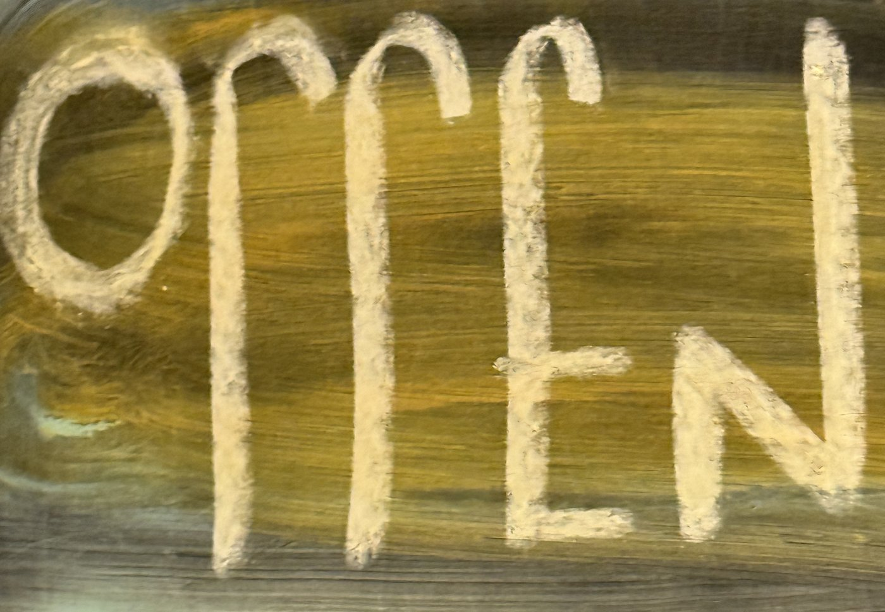

Performance
Auftritte, Aktionen und Prozesse.
hier entsteht gerade etwas. noch ist dieses zimmer leer.
arbeitest du in diesem bereich? schick ein detail — ein foto, eine skizze, eine frage. kein fertiges werk nötig.

Raum schaffenAuftritte, Aktionen und Prozesse.
hier entsteht gerade etwas. noch ist dieses zimmer leer.
arbeitest du in diesem bereich? schick ein detail — ein foto, eine skizze, eine frage. kein fertiges werk nötig.